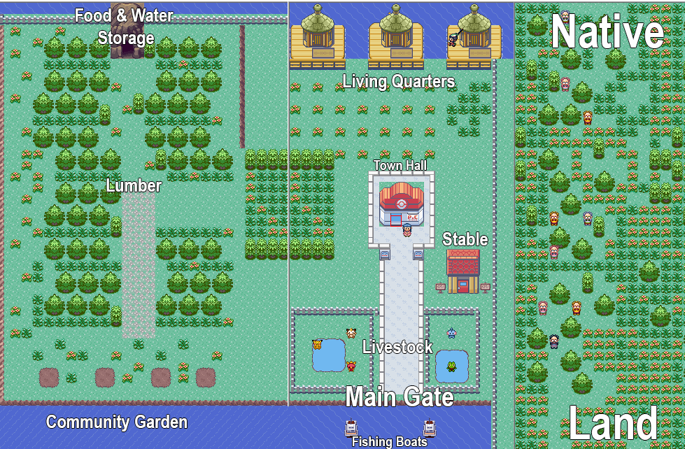

Previous Design Projects
Adobe Cerification

Project Explanation | Sophomore Year
This project required me to know the basic functionality of Illustrator and Photoshop. These tests evaluated my ability to effectively utilize the programs for graphic design. The variety of tools included in these programs are all covered on the test, so I was expected to understand the purpose of all of them. In addition, the test verified that I understood the file structure recommended for optimized development. Overall, these tests are an effective way to prepare new designers for the standards of a professional environment.
Project Reflection
I learned more about the most effective way to utilize the tools present in Illustrator and Photoshop. Understanding this crucial tools greatly improved my abilities as a graphic designers. As these programs are common in a profession setting, it is incredibly valuable to fully understand the potential of these resources. The various projects I have previously done throughout graphic design contributed to a strong understanding of basic concepts. These certifications ensure that the skills I have gained during the projects directly improved my ability to work within Illustrator and Photoshop.
Design Firm Logo
Project Explanation | Junior Year
This project introduced the concepts of branding while reviewing prior graphic design skills. Groups, acting as a Graphic Design Firm, would create a logo that represented the themes of their mission statement. Students were encouraged to constantly seek out feedback to strengthen their concepts. In addition, the rough drafts of the logos were presented to the class to promote constructive criticism. The groups then selected the most effective logo to create company letterheads, business cards, and envelopes.
Project Reflection
This project helped me learn how to effectively implement a minimalistic art style. Prior graphic design works were often cluttered, but a simple mission statement helped make my designs more impactful. I learned that carefully selecting the graphic elements creates a much stronger design. Despite my logo not being chosen, I was able to develop a previously unused graphic design skill. Overall, this unique project offered an engaging way to practice my ability to create a relevant logo that maintains the theme of a company.
American Colony Map

Project Explanation | Junior Year
This assignment required students to create an effective colony layout. The layout needed to provide the colony with adequate defenses against potentially hostile natives. In addition, the layout needed to clearly identify the methods of agricultural growth relevant to the region. The map created must show the various economic opportunities present in the colony. Overall, all layout choices should consist with the climate and social conditions of the chosen region.
Project Reflection
This assignment gave me the opportunity to create a map utilizing a Pokémon romhacking tool. This program gave me direct access to the sprites utilized in the game, so I was able to create a unique pixel art map. The program allows users to “draw” map tiles on top of previous textures which gave me plenty of freedom for designing a diverse landscape. In addition, the map created is fully compatible with a Gameboy Advance, so my peers were able to freely look around the created colony.
Disclaimer: Pokémon and the Gameboy Advance are properties of Nintendo. The graphics used are transformative and fall under fair use. Please support the official release.
Graphic Design Showcase


Project Explanation | Sophomore Year
This project required students to submit two pieces that represented their talents as an artist. I chose to submit a digitally created winterscape and a colorful photo to showcase the wide variety of skills I have obtained as an artist. The digitally created image and the carefully taken photo convey my experience with creating an effective art piece. These images were my favorite creations throughout my two years of graphic design.
Project Reflection
I learned how to effectively frame the subject of an image with my sunset picture. In addition, I learned how to manipulate the color balance in Photoshop to create a visually stunning image. For my graphic design element, I focused on capturing a cartoon look that maintained a consistently pleasant theme. Developing the tone of a work was completely new to me, so I am glad that I was able to effectively represent the intended purpose.
Return to Homepage